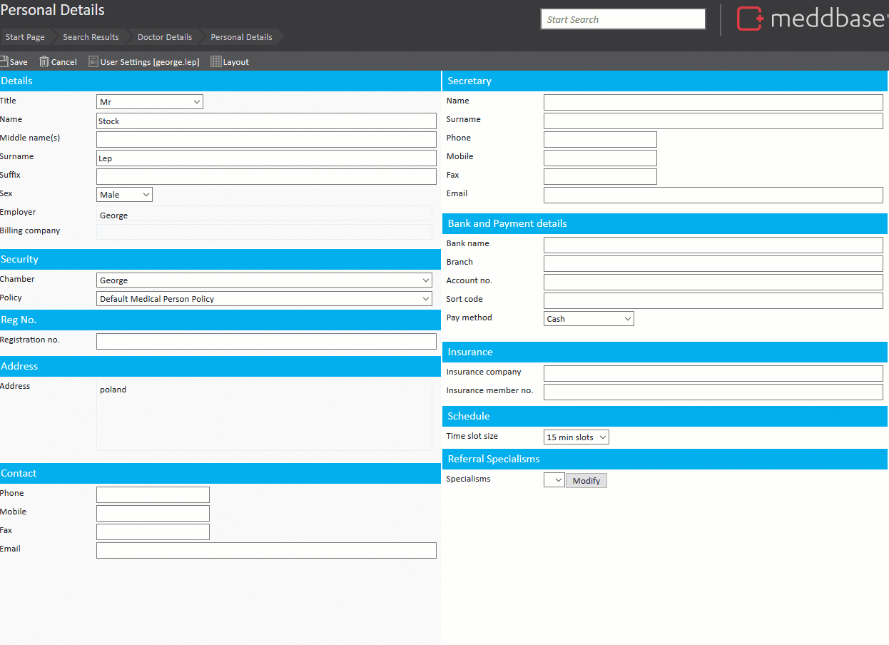
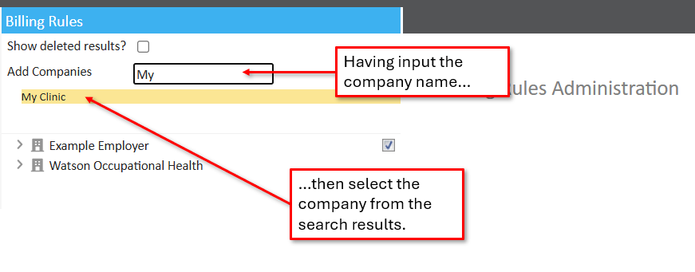
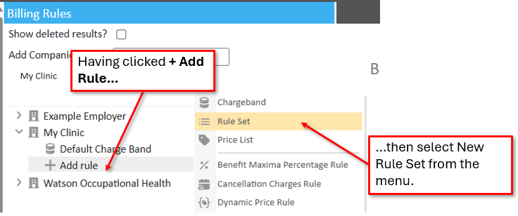
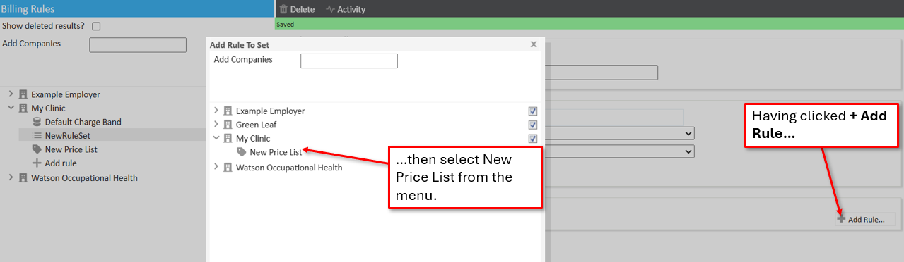
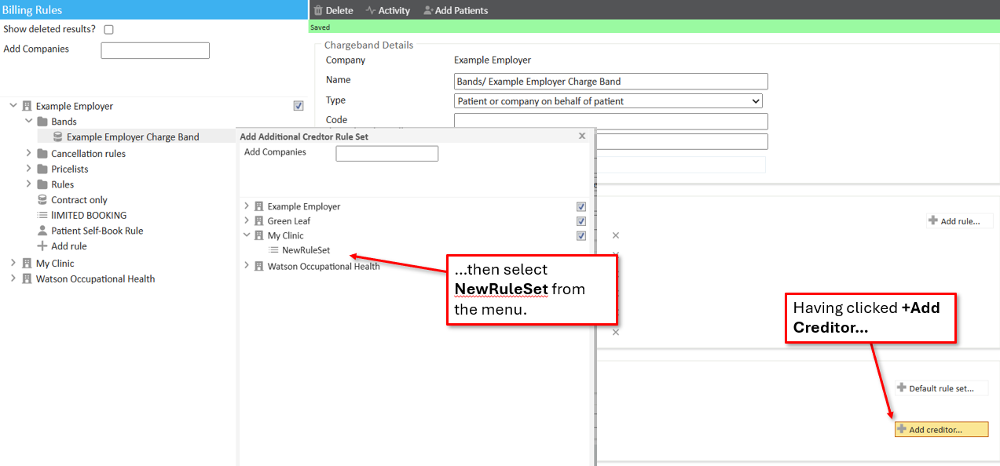
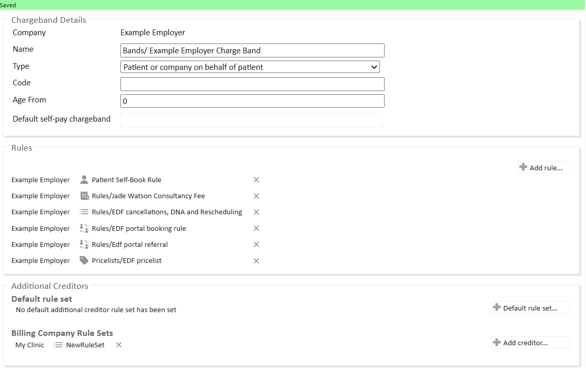
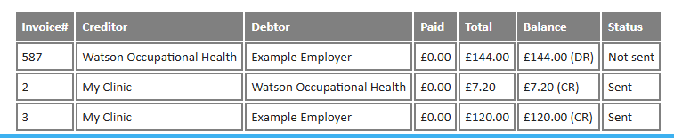

For certain insurers or employers, you may wish to break down your services further (such as for consultants and anaesthetist fees). Creditors can be managed on a per-clinician basis, or a per-billing company basis. This gives you the flexibility of managing individual clinician’s fees or bundling all fees for consultants into a single pot, such as an LLP (Limited Liability Partnership).
Another example would be a situation where consultants share facilities but they each invoice patients/insurers individually. In this case, each consultant must have their own personal billing company (an "External" company) linked to their Clinician record.
Click here for an article on adding companies.
This article outlines how you can set up a generic or billing company specific rule set for additional creditors and apply those rule sets on a charge band. You will also learn about an example use case and possible reason for using this feature.
To specify a clinician’s billing company in order to raise fees for the clinician the following process applies:
*If you would like the clinician to bill directly you can add a company specifically for this clinician. Alternatively, you can add a generic billing company for groups of clinicians. Remember to click Save once finished.

Having created the billing company and assigned it to relevant clinicians records, you can begin creating rule sets for the new company. For this example you can create a simple rule set containing only a Price List:



It is then added to the rule set.
Only rules relating to prices and the providing of services are considered in these 'additional creditor' rule sets.
With this rule set now created, for the Charge Band that needs to contain the multiple creditors, you can:-


Now, any services applied to an appointment on this charge band where the primary attendee’s billing company is My clinic will raise two invoices, one from the primary billing company (For the price dictated by Default Charge Band) and one from the My Clinic (Price dictated by NewRuleSet).

If a clinician’s billing company does not have a rule set specified in the Billing Company Rule Sets, but the clinician’s fees are still required to be billed separately, a general rule set for Other Companies can be applied to the Default Rule Set section of the charge band.